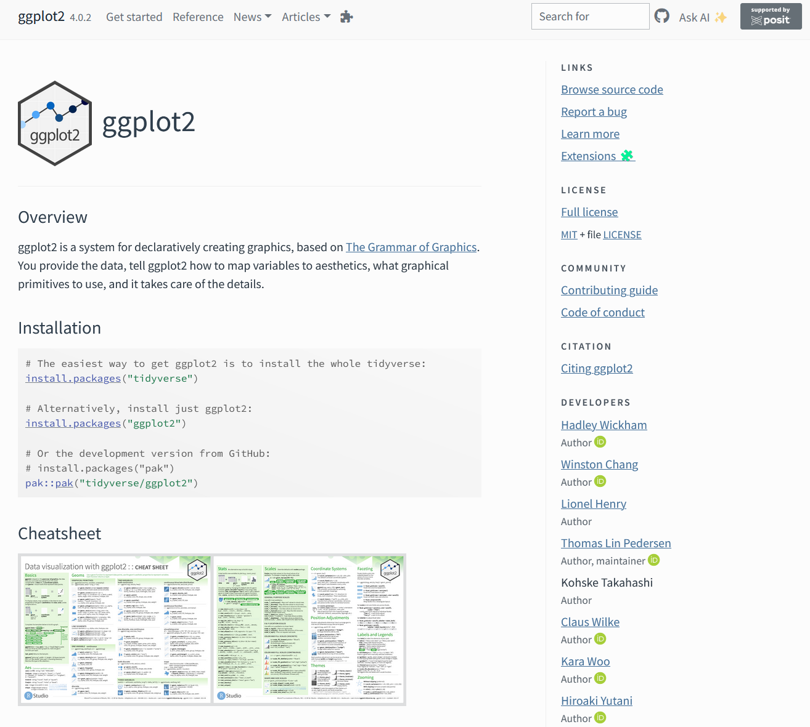
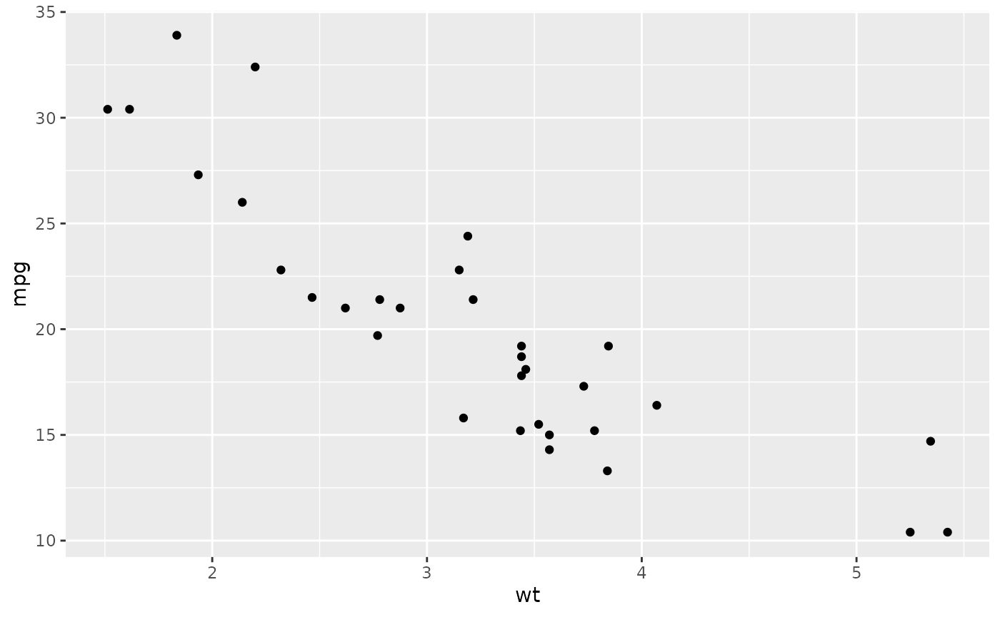
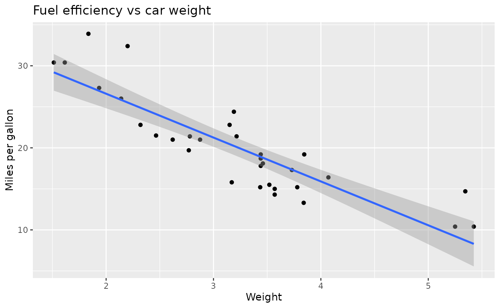
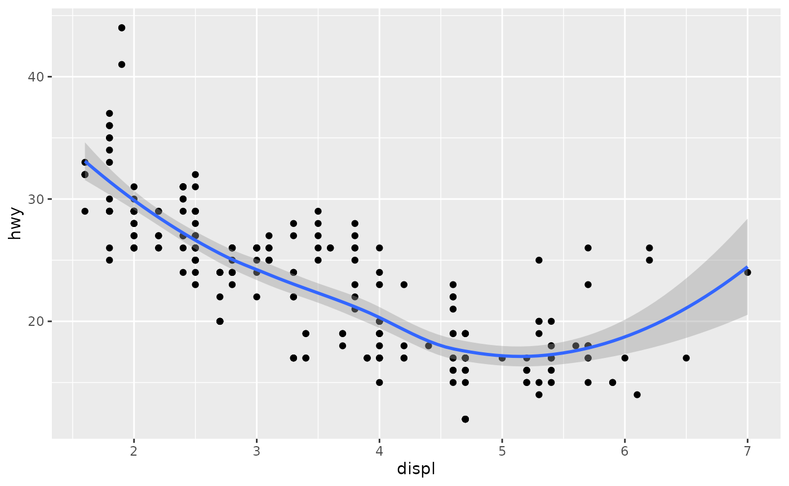
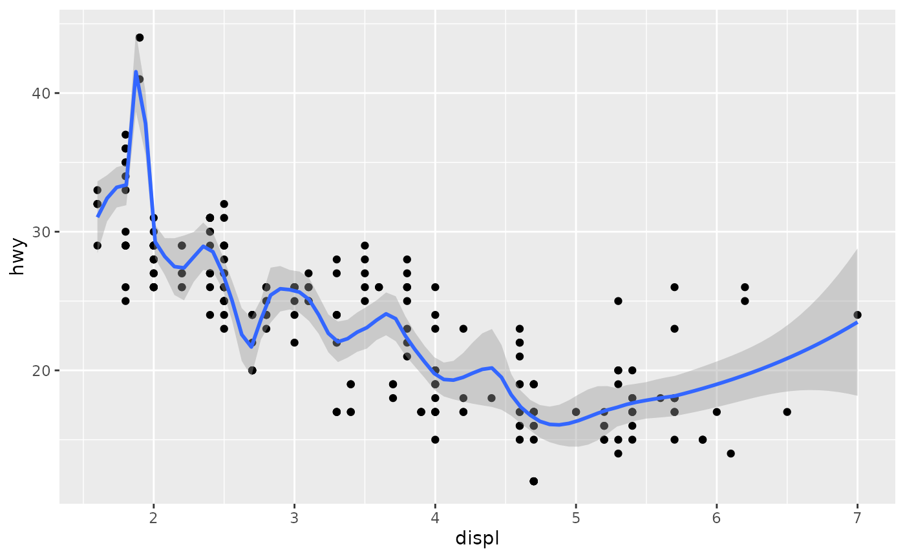
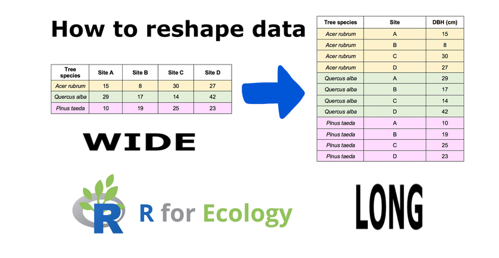
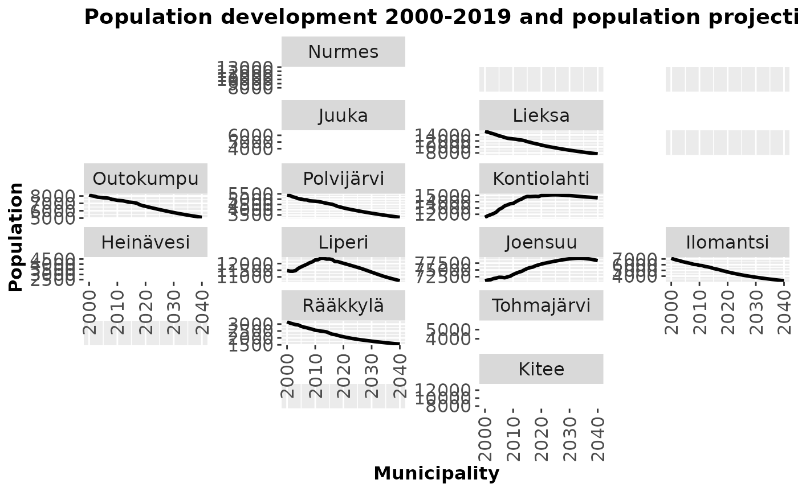

ggplot2
ggplot2 is a widely used data visualization package in R that lets you create clear, powerful, and customizable plots using a consistent and logical system called the Grammar of Graphics.
More details: https://ggplot2.tidyverse.org/

Why ggplot2 is so popular:
- Declarative and readable
- Easy to extend and modify
- Produces publication-quality figures
- Works perfectly with tidy data
- Excellent support for statistical graphics
ggplot2 has also an official extension mechanism which means that others can now easily create their own stats, geoms and positions, and provide them in other packages. You can find more information from here:
https://exts.ggplot2.tidyverse.org/ggiraph.html
Please, take a look also to this webpage:
https://github.com/erikgahner/awesome-ggplot2
Core idea: “Grammar of Graphics”
Instead of choosing a plot type (like “bar plot” or “scatter plot”) directly, ggplot2 builds plots by combining components (“layers”):
- Data – what you want to plot
- Aesthetics (aes) – how variables map to visuals (x, y, color, size, …)
- Geoms – what geometric objects to draw (points, lines, bars, …)
- Scales – how values map to colors, sizes, axes
- Facets – splitting plots into panels
- Themes – visual appearance (fonts, background, gridlines)
You add these components together using +.
A simple example
library(ggplot2)
ggplot(mtcars, aes(x = wt, y = mpg)) +
geom_point()
This means:
- Data: mtcars
- x-axis: weight (wt)
- y-axis: miles per gallon (mpg)
- Geom: points (scatter plot)
Adding more layers
ggplot(mtcars, aes(wt, mpg)) +
geom_point() +
geom_smooth(method = "lm") +
labs(
title = "Fuel efficiency vs car weight",
x = "Weight",
y = "Miles per gallon"
)
#> `geom_smooth()` using formula = 'y ~ x'
Here you extend the same plot by:
- adding a regression line
- adding labels
How it differs from base R plots
Base R:
plot(mtcars$wt, mtcars$mpg)
ggplot2:
ggplot(mtcars, aes(wt, mpg)) + geom_point()
ggplot2 is:
- more structured
- more consistent
- easier to build complex plots incrementally
Working with ggplot2: Population development of the municipalities
1. Installing and loading R packages
What is an R package? An R package is a collection of functions, datasets, and documentation that extends what R can do. Base R is fairly minimal; most real data analysis uses packages.
Loading commonly used packages
library(forecast)
library(foreign)
library(reshape2)
library(ggplot2)
library(zoo)
#>
#> Attaching package: 'zoo'
#> The following objects are masked from 'package:base':
#>
#> as.Date, as.Date.numeric
library(scales)
library(dplyr)
#>
#> Attaching package: 'dplyr'
#> The following objects are masked from 'package:stats':
#>
#> filter, lag
#> The following objects are masked from 'package:base':
#>
#> intersect, setdiff, setequal, union
library(ggthemes)Installing and loading additional packages
install.packages("geofacet")geofacet is used for geographical faceting (e.g. small multiples laid out like a map).
Explanation:
- install.packages() downloads the package from CRAN
- You only need to install a package once
- library() must be run every session
Installing a package from GitHub
remotes::install_github("ropengov/geofi")
library(geofi)
#>
#> geofi R package: tools for open GIS data for Finland.
#> Part of rOpenGov <ropengov.org>.
#> Version 1.2.1Explanation:
- Some packages are not on CRAN
- install_github() installs directly from GitHub
- geofi provides Finnish municipality and regional data
Note! This requires the remotes package to be installed.
2. Reading data into R
Reading a CSV file
aluejaot2 <- spatialcourseOL::aluejaot2
head(aluejaot2)
#> tunnus nimi22 NUTS.1 Tukialue ELY.keskus
#> 1 5 Alajärvi Manner-Suomi tukialue 2+3 11 Etelä-Pohjanmaan ely
#> 2 9 Alavieska Manner-Suomi tukialue 1 13 Pohjois-Pohjanmaan ely
#> 3 10 Alavus Manner-Suomi tukialue 2+3 11 Etelä-Pohjanmaan ely
#> 4 16 Asikkala Manner-Suomi tukialue 2+3 04 Hämeen ely
#> 5 18 Askola Manner-Suomi tukialue 2+3 01 Uudenmaan ely
#> 6 19 Aura Manner-Suomi tukialue 2+3 02 Varsinais-Suomen ely
#> Suuralue Maakunta Seutukunta
#> 1 3 Länsi-Suomen sa Etelä-Pohjanmaa 146 Järviseudun sk
#> 2 4 Pohjois- ja Itä-Suomen sa Pohjois-Pohjanmaa 177 Ylivieskan sk
#> 3 3 Länsi-Suomen sa Etelä-Pohjanmaa 144 Kuusiokuntien sk
#> 4 2 Etelä-Suomen sa Päijät-Häme 071 Lahden sk
#> 5 1 Helsinki-Uudenmaan sa Uusimaa 015 Porvoon sk
#> 6 2 Etelä-Suomen sa Varsinais-Suomi 025 Loimaan sk
#> Leader Alueluokka
#> 1 40 Aisapari ry Ydinmaaseutu
#> 2 44 Rieska-LEADER ry Ydinmaaseutu
#> 3 37 Kuudestaan ry Ydinmaaseutu
#> 4 15 Päijänne-Leader ry Kaupunkien läh. maaseutu
#> 5 01 Maaseudun kehittämisyhdistys SILMU ry Kaupunkien läh. maaseutu
#> 6 06 Varsinais-Suomen jokivarsikumppanit ry Kaupunkien läh. maaseutu
#> Kuntaryhma Alueluokka_eng
#> 1 Taajaan asutut kunnat Core rural
#> 2 Maaseutumaiset kunnat Core rural
#> 3 Taajaan asutut kunnat Core rural
#> 4 Taajaan asutut kunnat Rural close to urban
#> 5 Maaseutumaiset kunnat Rural close to urban
#> 6 Maaseutumaiset kunnat Rural close to urbanExplanation:
- read.csv() loads a CSV file into R as a data frame
- sep = “,” specifies comma‑separated values
- encoding = “UTF-8” ensures correct character encoding (important for Finnish characters)
- stringsAsFactors = FALSE keeps text variables as character strings
- names(dat) shows column names of the dat object
Reading a second dataset
data_vakie3 <- spatialcourseOL::data_vakie3
head(data_vakie3)
#> tunnus nimi X2000 X2001 X2002 X2003 X2004 X2005 X2006 X2007 X2008 X2009
#> 1 5 Alajärvi 11503 11341 11185 11075 11027 10910 10768 10698 10634 10573
#> 2 9 Alavieska 2940 2902 2898 2891 2894 2854 2827 2817 2759 2776
#> 3 10 Alavus 13135 13040 12925 12897 12880 12868 12791 12788 12706 12586
#> 4 16 Asikkala 8644 8680 8648 8554 8547 8560 8597 8663 8604 8551
#> 5 18 Askola 4389 4421 4446 4474 4530 4555 4627 4711 4761 4831
#> 6 19 Aura 3338 3378 3457 3514 3620 3699 3750 3823 3852 3840
#> X2010 X2011 X2012 X2013 X2014 X2015 X2016 X2017 X2018 X2019 X2020 X2021 X2022
#> 1 10487 10327 10268 10227 10171 10006 9899 9831 9700 9562 9472 9363 9256
#> 2 2770 2750 2761 2740 2687 2687 2639 2610 2573 2519 2496 2461 2428
#> 3 12439 12385 12341 12228 12103 12044 11907 11713 11544 11468 11253 11118 10988
#> 4 8552 8498 8461 8405 8374 8287 8323 8248 8149 8083 8032 7980 7929
#> 5 4864 4911 4988 4991 5064 5104 5046 4990 4958 4943 4947 4938 4924
#> 6 3911 3975 3971 3962 3982 3986 3984 3991 3984 3941 3973 3968 3963
#> X2023 X2024 X2025 X2026 X2027 X2028 X2029 X2030 X2031 X2032 X2033 X2034 X2035
#> 1 9153 9052 8952 8854 8757 8659 8565 8475 8390 8307 8228 8153 8079
#> 2 2396 2366 2338 2309 2283 2257 2231 2206 2181 2156 2132 2112 2090
#> 3 10861 10736 10608 10486 10365 10250 10136 10023 9913 9808 9705 9604 9504
#> 4 7874 7819 7761 7707 7653 7600 7548 7498 7448 7399 7350 7300 7255
#> 5 4912 4900 4889 4877 4864 4846 4827 4808 4788 4770 4751 4733 4717
#> 6 3959 3951 3946 3940 3935 3932 3925 3917 3909 3902 3893 3884 3875
#> X2036 X2037 X2038 X2039 X2040
#> 1 8009 7938 7870 7802 7735
#> 2 2072 2054 2036 2020 2003
#> 3 9406 9313 9221 9134 9048
#> 4 7208 7163 7119 7076 7032
#> 5 4701 4688 4677 4666 4656
#> 6 3866 3859 3853 3846 38423. Merging datasets
x2 <- merge(data_vakie3, aluejaot2, by.x="tunnus", by.y="tunnus",all.x=T)Explanation:
- merge() combines two datasets
- by.x and by.y specify the id variable which is found from both of datasets (here id is tunnus)
- all.x = TRUE keeps all rows from data (left join)
4. Reshaping the data (wide → long)
Many datasets are initially in wide format:

melt():
- Keeps identifier variables (id.vars)
- Converts columns 3–43 into: a variable column and a value column
As a results, data2 is suitable for ggplot2 and time‑series analysis.
5. Creating a time variable
aika <- seq(2000,2040,1)
aika
#> [1] 2000 2001 2002 2003 2004 2005 2006 2007 2008 2009 2010 2011 2012 2013 2014
#> [16] 2015 2016 2017 2018 2019 2020 2021 2022 2023 2024 2025 2026 2027 2028 2029
#> [31] 2030 2031 2032 2033 2034 2035 2036 2037 2038 2039 2040Explanation:
- seq() creates a sequence of numbers
- Here: years from 2000 to 2040
- Step size = 1 year
This vector can be used as:
- A time axis
- A reference for plotting
- Indexing years
6. Creating a repeated time variable
b <- rep(aika,310)Explanation:
- aika is a vector of years (2000–2040)
- rep() repeats this vector 310 times
- The result is a long vector where the time sequence is repeated for each spatial unit (e.g. municipality or region)
Why this is needed?
After reshaping the data into long format, we need a time variable that matches the number of rows in the dataset.
Conceptually:
- Each region has values for every year
- b assigns the correct year to each observation
7. Sorting the data by region name
data3 <- data2[order(data2$nimi),]Explanation:
- order(data2$nimi) sorts rows alphabetically by region name (nimi)
- The brackets [ , ] reorder the rows accordingly
Why this matters?
- Ensures that time series are properly aligned
- Matches the structure of the repeated time vector (b)
- Prevents mismatch between years and regions
This step is crucial for correct time–region alignment.
8. Adding the time variable to the data
Explanation:
- cbind() binds a new column to the dataset
- The new column b represents time (years)
- names(data4) checks that the column was added correctly
9. Converting values to numeric
data4$value <- as.numeric(data4$value)Explanation:
- After melt(), values are often stored as characters
- as.numeric() converts them into numeric values
Why this is important?
- Mathematical operations (sum, mean, plots) require numeric data
- Without this step, aggregation would fail or give errors
10. Aggregating data by year, region, and province
Explanation: This step summarizes the data.
aggregate() groups observations
Grouping variables:
data4$b → year
data4$nimi → region
data4$Maakunta → province
FUN = sum → sums values within each group
Conceptually: This produces one value per year per region, suitable for:
- time‑series analysis
- plotting trends
- regional comparisons
The output columns will be named:
- Group.1 → year
- Group.2 → region name
- Group.3 → province
- x → aggregated value
11. Checking dataset dimensions
dim(data5)
#> [1] 12669 4Explanation:
dim() reports:
- number of rows
- number of columns
Why this matters?
- Confirms that aggregation worked as expected
- Useful for sanity checking before analysis or plotting
12. Subsetting one province
vs <- subset(data5, Group.3=="Pohjois-Karjala")Explanation:
- subset() filters the data
- Keeps only rows where the province is Pohjois‑Karjala
Result: vs contains only regional time series for North Karelia
Ready for:
- regional plots
- comparisons
- focused analysis
13. Visualising regional population development with ggplot2
The complete plotting code
ggplot(vs, aes(x=Group.1, y=x, group=Group.2))+
geom_line(size=1.1) +
theme(axis.text.x=element_text(angle=90, vjust=0.5,hjust=1)) +
facet_geo(facets = ~Group.2, grid=geofi::grid_pohjois_karjala, scales = "free_y") +
labs(title="Population development 2000-2019 and population projection 2020-2040", y="Population", x="Municipality")+
theme(axis.text = element_text(size=12),
axis.title = element_text(size=12, face="bold"),
plot.title = element_text(size=14, face="bold"),
strip.text = element_text(size=12))+
scale_x_continuous(breaks=seq(2000, 2040,5))
#> Warning: Using `size` aesthetic for lines was deprecated in ggplot2 3.4.0.
#> ℹ Please use `linewidth` instead.
#> This warning is displayed once per session.
#> Call `lifecycle::last_lifecycle_warnings()` to see where this warning was
#> generated.
#> Note: You provided a user-specified grid. If this is a generally-useful
#> grid, please consider submitting it to become a part of the geofacet
#> package. You can do this easily by calling:
#> grid_submit(__grid_df_name__)
Step‑by‑step explanation
1. Defining the plot structure
ggplot(vs, aes(x = Group.1, y = x, group = Group.2))Explanation:
- vs is the dataset (Pohjois‑Karjala only)
- Group.1 → year
- x → aggregated population
- group = Group.2 → separate line for each municipality
2. Drawing population trends as lines
geom_line(size = 1.1)Explanation:
- Draws a continuous line for each municipality
- size = 1.1 increases line thickness for readability
3. Rotating x‑axis labels
theme(axis.text.x = element_text(angle = 90, vjust = 0.5, hjust = 1))Explanation:
- Rotates year labels by 90 degrees
- Prevents overlapping text
- Improves readability when many years are shown
4. Spatial faceting using geofacet
facet_geo(
facets = ~ Group.2,
grid = geofi::grid_pohjois_karjala,
scales = "free_y"
)Explanation (this is the key idea):
- Creates one panel per municipality
- Panels are arranged geographically, not alphabetically
- geofi::grid_pohjois_karjala defines the spatial layout
- scales = “free_y” gives each municipality its own y‑axis range
5. Adding labels and title
labs(
title = "Population development 2000–2019 and population projection 2020–2040",
y = "Population",
x = "Municipality")Explanation:
- Adds an informative title
- Labels axes clearly
- Essential for standalone interpretation
6. Improving visual appearance
theme(
axis.text = element_text(size = 12),
axis.title = element_text(size = 12, face = "bold"),
plot.title = element_text(size = 14, face = "bold"),
strip.text = element_text(size = 12)
)Explanation:
- Increases font sizes
- Makes titles and axes clearer
- Improves readability for lectures and reports
7. Controlling x‑axis year breaks
scale_x_continuous(breaks = seq(2000, 2040, 5))Explanation:
- Shows year labels every 5 years
- Avoids clutter
- Makes long time series easier to read